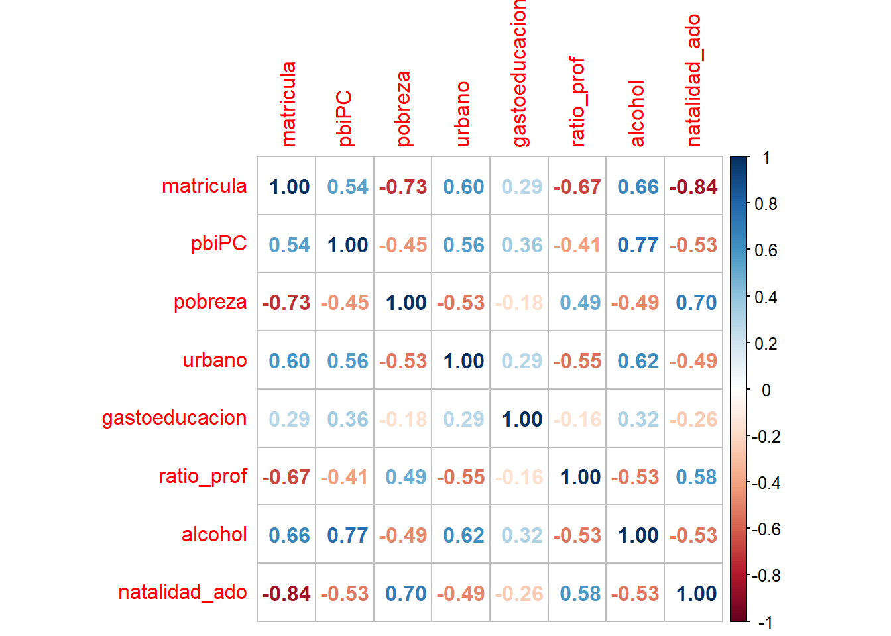
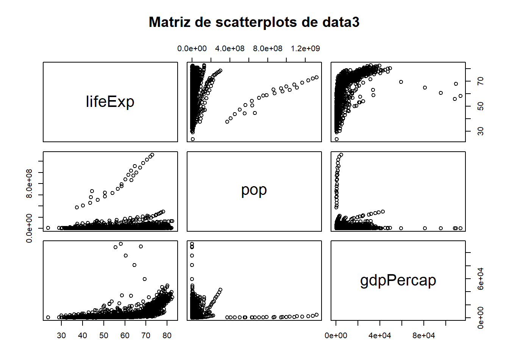
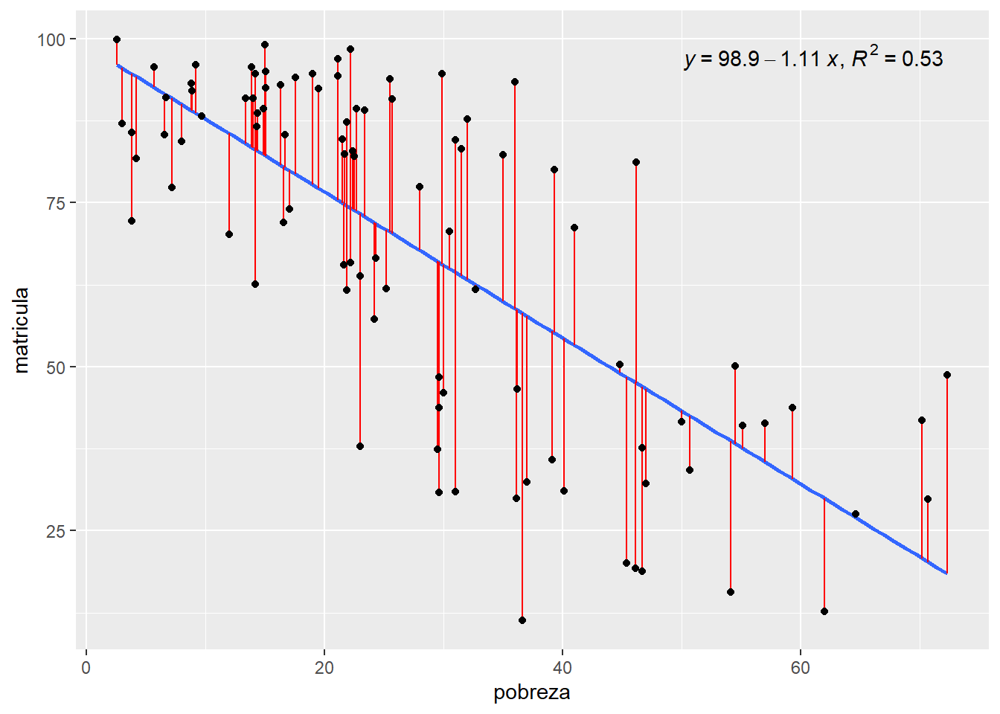
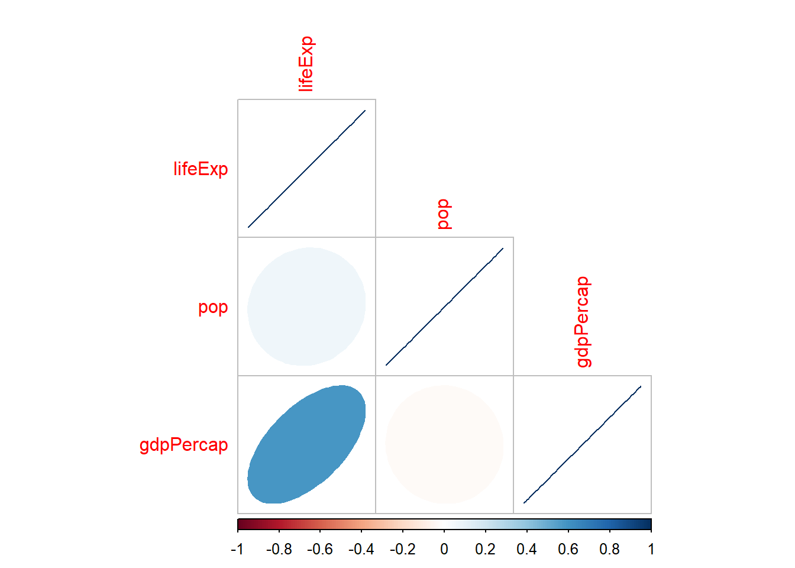
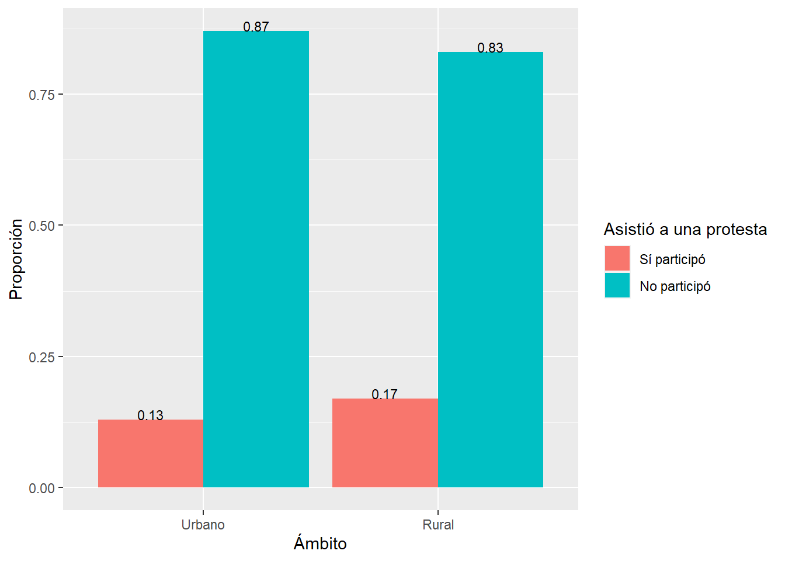

Sesión 5 1. Visualización con ggplot2: Introducción
Es un sistema organizado de visualización de datos. Forma parte del conjunto de librerías llamado tidyverse.
La primera versión del paquete fue liberada por Hadley Wickham el 10 de junio de 2007, desde entonces el paquete se ha enriquecido con diferentes elementos.
Ggplot2 se ha convertido en el paquete de creación de visualizaciones más popular en el universo R por permitir de manera sencilla obtener gráficos de alta calidad. Incluso otros programas de Data Science carecen de una herramienta como ggplot2.
5.1 1.1 Gramática de ggplot2
La gramática del ggplot2 se basa en el libro The Grammar of Graphics
A diferencia de los gráficos con el paquete base donde creamos un gráfico a base de pasos sucesivos, ggplot2 se basa en una gramática de gráficos, añadiendo elementos a un graphical device , donde distintos componentes independientes se pueden combinar de muchas maneras diferentes.


5.3 1.3 Data (Capa 1)
Es la materia prima sobre la cual se van a posicionar el resto de capas y los datos que se desean representar.
El ggplot2 sólo acepta un tipo de datos: data.frames/ tibbles. No permite vectores.
Vamos a utilizar la data del paquete {gapminder}.
## # A tibble: 3 × 6
## country continent year lifeExp pop gdpPercap
## <fct> <fct> <int> <dbl> <int> <dbl>
## 1 Afghanistan Asia 1952 28.8 8425333 779.
## 2 Afghanistan Asia 1957 30.3 9240934 821.
## 3 Afghanistan Asia 1962 32.0 10267083 853.Colocamos la función ggplot() y nos damos cuenta que tenemos un lienzo. Es el primer paso!

5.4 1.4 Aesthetics / “Estéticas” (Capa 2)
aes()Indican las variables que se van a graficar, tanto en el eje horizontal (x) como en el eje vertical (y).
Ggplot2 no está pensado para gráficos tridimensionales, pero ciertamente podemos incluir una tercera variable, por ejemplo, indicando el color si deseamos identificar grupos, o indicando el tamaño (de los puntos en un scatterplot) para agregar una nueva variable cuantitativa.
Siguiendo con el ejemplo del punto anterior, como ya hemos colocado ggplot() le SUMAMOS una capa adicional, en este caso, las Aesthetics.
data |> # Data
ggplot()+ # Iniciamos la construcción del gráfico con ggplot
aes(x = lifeExp) # Establecemos la variable 'lifeExp' como el eje x
Nos damos cuenta que en el gráfico ya aparece, en el eje X, la variable lifeExp. Sin embargo, aún no mostramos ninguna gráfica.
5.5 1.5 Objetos geométricos (Capa 3)
Funciones: geom_line(), geom_boxplot(), etc.
Indica qué tipo de gráfico (geometría) se va a construir: gráfico de barras, columnas, puntos, histográmas, boxplots, líneas, densidad, entre otros.
En el paquete {ggplot2} existen 30 geometrías disponibles. Puedes ver el detalle de estos en la documentación del paquete.
Cada geometría tiene su propia función y, como ya hemos visto, cada una puede tener distintos argumentos. Estas 3 capas son el mínimo necesario para hacer un gráfico:
Data + Aesthetics + Geometries
5.5.1 A. Histograma
Tipo de gráfico utilizado en estadística para representar la distribución de frecuencia de un conjunto de datos numéricos continuos. En un histograma, el rango de valores se divide en un conjunto de intervalos mutuamente excluyentes y consecutivos (también llamados “bins” o “clases”), y se cuenta el número de observaciones que caen dentro de cada intervalo. Estos recuentos se representan como barras verticales que se elevan sobre los intervalos correspondientes, y su altura indica la frecuencia o densidad de observaciones en ese intervalo.
El histograma es una herramienta útil para explorar la forma general de una distribución de datos, así como para identificar características como la asimetría, la moda y los valores atípicos
data |> # Data
ggplot() + # Iniciamos la construcción del gráfico con ggplot
aes(x = lifeExp) + # Establecemos la variable 'lifeExp' como el eje x
geom_histogram() # Agregamos un histograma basado en 'lifeExp'## `stat_bin()` using `bins = 30`. Pick better value with `binwidth`.
data |> # Data
ggplot() + # Iniciamos la construcción del gráfico con ggplot
aes(x = lifeExp) + # Establecemos la variable 'lifeExp' como el eje x
geom_histogram(bins=15) # Agregamos un histograma basado en 'lifeExp' con un bins=15
5.5.2 B. Gráfico de barras
En un gráfico de barras vertical,las categorías se representan en el eje horizontal y la frecuencia o cantidad en el eje vertical.
El gráfico de barras es una herramienta útil para comparar la frecuencia o cantidad de diferentes categorías o variables en un conjunto de datos.
EJEMPLO - SITUACIÓN 1:
Tienes una base de datos con las observaciones originales:
data |>
select(continent) |> # Seleccionamos solo la columna 'continent' del conjunto de datos 'data'
head() # Mostramos las primeras 6 entradas (por defecto) de la columna 'continent'## # A tibble: 6 × 1
## continent
## <fct>
## 1 Asia
## 2 Asia
## 3 Asia
## 4 Asia
## 5 Asia
## 6 AsiaUtilizamos la función geom_bar(). El resultado es que la función ha CONTADO la frecuencia de cada categoría de continent.
data |> # Data
ggplot() + # Iniciamos la construcción del gráfico con ggplot
aes(x = continent) + # Establecemos la variable 'continent' como el eje x
geom_bar() # Creamos un gráfico de barras basado en el conteo de 'continent'EJEMPLO - SITUACIÓN 2:
En algunas ocasiones ya contamos con el conteo realizado y sólo deseamos el gráfico. Para ello utilizamos el ARGUMENTO stat=“identity”.
Un caso como el siguiente:
## # A tibble: 5 × 2
## continent n
## <fct> <int>
## 1 Africa 624
## 2 Americas 300
## 3 Asia 396
## 4 Europe 360
## 5 Oceania 24Aplicamos:
data |> # Data
count(continent) |> # Contamos las observaciones por 'continent'
ggplot()+ # Iniciamos la construcción del gráfico con ggplot
aes(y=n, x=continent)+ # Establecemos 'continent' como el eje x y el conteo 'n' como el eje y
geom_bar(stat="identity") # Creamos un gráfico de barras usando las cuentas directamente
EJEMPLO - MÁS DETALLE
Si deseamos agregar etiquetas de valores utilizamos geom_text()
data |>
ggplot() +
aes(x = continent) + # Definimos 'continent' como el eje x
geom_bar() + # Creamos un gráfico de barras que cuenta las observaciones por 'continent'
geom_text(stat='count', # Añadimos etiquetas de texto basadas en el conteo de observaciones
aes(label=..count..), # El texto de la etiqueta será el conteo
vjust=-0.5) # Ajustamos la posición vertical de las etiquetas para que aparezcan justo arriba de las barras## Warning: The dot-dot notation (`..count..`) was deprecated in ggplot2 3.4.0.
## ℹ Please use `after_stat(count)` instead.
## This warning is displayed once every 8 hours.
## Call `lifecycle::last_lifecycle_warnings()` to see where this warning was
## generated.
Y el gráfico de barras apiladas?
data |>
select(-4, -5) |>
mutate(gdp_cat=case_when( # Creamos una nueva variable denominada "gdp_cat" y...
gdpPercap<4000~ "Bajo GDPpc", # si 'gdpPercap' es menor a 4000, clasificamos como "Bajo GDPpc" ...
TRUE~ "Alto GDPpc")) |> # en cualquier otro caso, clasificamos como "Alto GDPpc".
filter(year==2007) |> # Seleccionamos aquellas mediciones del 2007
ggplot()+
aes(x=continent, fill=gdp_cat) + # Definimos 'continent' como el eje x y usamos 'gdp_cat' para el color de las barras
geom_bar()+ # Creamos un gráfico de barras
geom_text(stat='count', # Añadimos etiquetas de texto basadas en el conteo de observaciones
aes(label=..count.., # El texto de la etiqueta será el conteo
group=gdp_cat), # Agrupamos por la categoría de GDP para calcular el conteo
position=position_stack(vjust=0.5)) # Posicionamos las etiquetas en el centro de las barras 
5.5.3 C. Gráfico de línea
data |>
filter(country=="Peru", year>1960) |>
ggplot() + #
aes(x = year) + # Definimos 'year' como el eje x
aes(y = gdpPercap) + # Definimos 'gdpPercap' como el eje y
geom_line()+ # Añadimos una línea para visualizar la tendencia del PIB per cápita a lo largo de los años
geom_point() # Superponemos puntos en cada año para destacar los valores individuales
Separando grupos por color
data |>
filter(continent=="Oceania") |> # Filtramos el dataset para solo tener datos de países en Oceanía
ggplot()+ # Iniciamos la construcción del gráfico con ggplot
aes(x=year) + # Definimos 'year' como el eje x
aes(y=lifeExp) + # Definimos 'lifeExp' como el eje y
aes(color=country) + # Establecemos el color de las líneas y puntos basado en el país
geom_line() + # Añadimos una línea para visualizar la tendencia de la expectativa de vida a lo largo de los años
geom_point() # Superponemos puntos en cada año para destacar los valores individuales
También le podemos añadir las etiquetas de los valores utilizando geom_text()
data |>
filter(continent=="Oceania") |>
ggplot()+
aes(x=year, y=lifeExp, color=country) + # En una práctica óptima, puedes combinar todos los aes() en uno solo, lo que simplifica y hace que el código sea más legible.
geom_line() +
geom_point() +
geom_text(aes(label=round(lifeExp, 1)), # Añade etiquetas de texto con el valor de 'lifeExp' redondeado a un decimal
vjust=-0.5, # Ajusta verticalmente las etiquetas para que aparezcan justo arriba de los puntos
hjust=1.2) # Ajusta horizontalmente las etiquetas para que se desplacen hacia la izquierda de los puntos
5.5.4 D. Gráfico de dispersión
Un gráfico de dispersión es una representación visual en la que se utilizan puntos para mostrar la relación entre dos variables cuantitativas. Cada punto en el gráfico representa una observación y su posición en el eje horizontal (eje X) y vertical (eje Y) indica los valores de las dos variables.
data |>
filter(year==2007, continent=="Americas") |>
ggplot()+ # Iniciamos la construcción del gráfico con ggplot
aes(x=lifeExp, y= gdpPercap)+ # Establecemos 'lifeExp' en el eje x y 'gdpPercap' en el eje y
geom_point() # Representamos cada país como un punto en el gráficoCon etiquetas:
data |>
filter(year==2007, continent=="Americas") |>
ggplot()+ # Iniciamos la construcción del gráfico con ggplot
aes(x=lifeExp, y= gdpPercap, label=country)+ # Establecemos 'lifeExp' en el eje x, 'gdpPercap' en el eje y, y 'country' como etiqueta
geom_point()+ # Representamos cada país como un punto en el gráfico
geom_text() # Añadimos etiquetas de texto con el nombre de cada país cerca de su respectivo punto 5.5.5 E. Boxplot

Es utilizado para representar la distribución de un conjunto de datos numéricos a través de sus cuartiles.
El gráfico consiste en una caja que representa el rango intercuartil (IQR),es decir, la diferencia entre el tercer cuartil (Q3) y el primer cuartil(Q1).
Dentro de la caja,se dibuja una línea que representa la mediana.
Los bigotes,que se extienden desde la caja, indican el rango de los datos que se encuentran dentro de un cierto múltiplo del IQR, generalmente 1.5 veces el IQR.
Los valores que están por encima o por debajo de los bigotes se representan como puntos o asteriscos, que se conocen como valores atípicos.
El boxplot es útil para identificar valores atípicos y para comparar la distribución de varios conjuntos de datos en un solo gráfico. También permite visualizar la simetría o asimetría de la distribución y la presencia de sesgo.
data |>
ggplot() +
aes(x = lifeExp) + # Establecemos 'lifeExp' en el eje x
geom_boxplot() # Solicitamos un boxplotPuedes colocar grupos en uno de los ejes para gráficos univariados”
data |>
select(-4, -5) |>
mutate(gdp_cat=case_when(
gdpPercap<4000~ "Bajo GDPpc",
TRUE~ "Alto GDPpc")) |>
filter(year==2007) |>
ggplot()+ # Iniciamos construcción del gráfico con ggplot
aes(x=continent, y=gdpPercap, color=continent)+ # Establecemos 'continent' como eje x, 'gdpPercap' como eje y, y el color de las cajas basado en 'continent'
geom_boxplot() # Representamos un diagrama de cajas para 'gdpPercap' agrupado por 'continent'